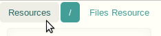
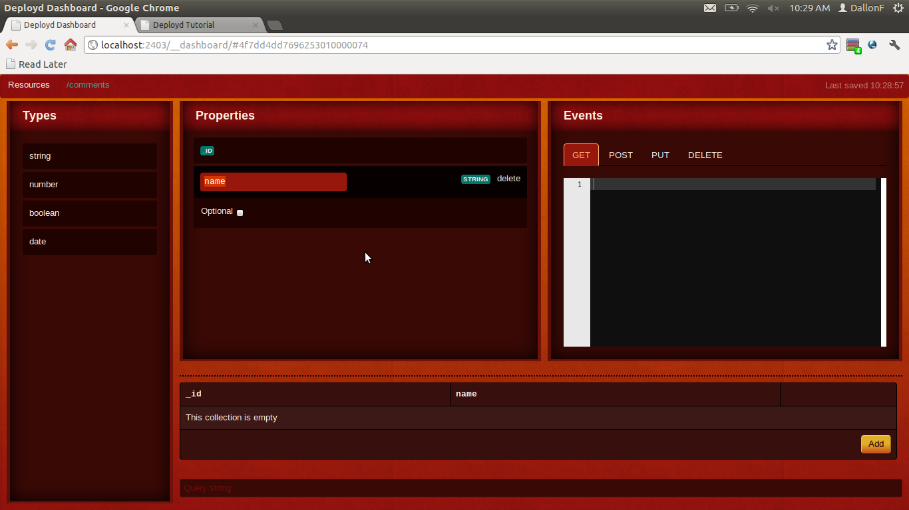
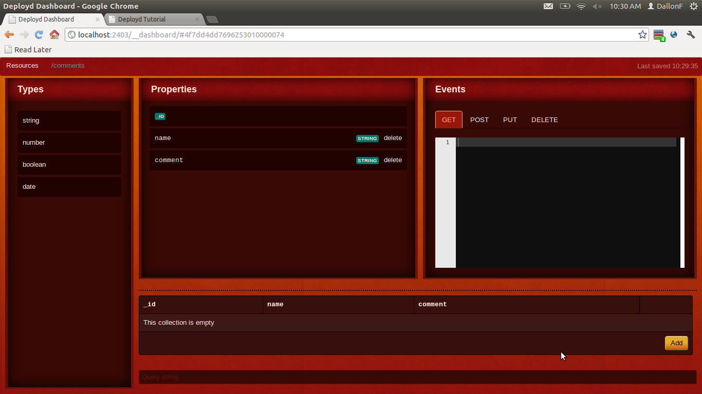
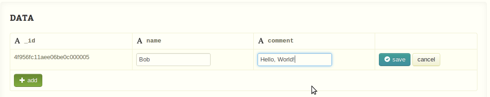
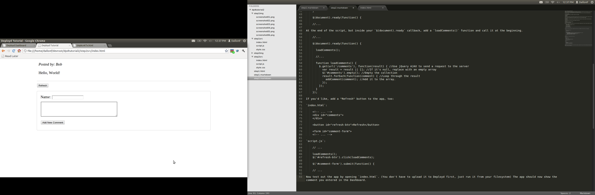

Right now, the comment app isn't very useful, because any comments you add go away when you refresh the page, and other people can't see them. It would be much better if you could save the comments somewhere and load them along with the page.
Of course, JavaScript is a client-side language, so you can't just save data - you have to send it to a server. That's where Deployd comes in.
Go to the dashboard and add a new Collection resource. Name it /comments.

In order to use a collection, you have to define what its objects will look like. In this app, you have to a save a name and a comment, which are both text.
Drag a string onto the Properties panel, just like adding a resource. Call it name. Leave "Optional" unchecked.

Do the same thing to add another string called comment. Notice that the grid on the bottom of the screen has updated to include those properties.

Click the "Add" button on the grid. Type in a name and comment, then click "done".

Now you have a working database for your app!
In script.js, add these two utility functions to the top of the script (before $(document).ready). Make sure to replace [MYAPP] with your actual app url:
function url(path) {
return 'http://[MYAPP].deploydapp.com' + path;
}
function showError(xhr) {
alert(xhr.responseText);
}
$(document).ready(function() {
//...
Inside your $(document).ready callback, add a loadComments() function and call it when the page loads.
//...
$(document).ready(function() {
loadComments();
//...
function loadComments() {
$.get(url('/comments'), function(result) { //Use jQuery AJAX to send a request to the server
var result = result || []; //If it's null, replace with an empty array
$('#comments').empty(); //Empty the collection
result.forEach(function(comment) { //Loop through the result
addComment(comment); //Add it to the array.
});
});
}
});
Notice that you don't have to use a special SDK to retreive data from a Deployd server. This tutorial uses jQuery to make things simpler, but you can use a standard XMLHTTPRequest object in vanilla JavaScript with the same effect.
If you'd like, add a "Refresh" button to the app, too:
index.html:
<!-- ... -->
<div id="comments">
</div>
<button id="refresh-btn">Refresh</button>
<form id="comment-form">
<!-- ... -->
script.js:
// ...
loadComments();
$('#refresh-btn').click(loadComments);
$('#comment-form').submit(function() {
// ...
Now test out the app by opening index.html. (You don't have to upload it to Deployd first, just run it from your filesystem) The app should now show the comment you entered in the Dashboard.

To better understand what's going, open a REST or HTTP client. If you don't already have one, you can usually search your browser's add-on source for "REST Client". Send a request to:
URL: http://[YOURAPP].deploydapp.com/comments
Method: GET
You should get a response such as:
Status: 200 OK
[{"_id":"4f7dd6ea7696253010000077","name":"Bob","comment":"Hello, World!"}]
A Deployd collection is a REST API just like Facebook, Twitter, Foursquare, and others. The data is formatted with JSON, which is similar to a JavaScript object or array literal. When jQuery loads this object, it parses the JSON automatically and turns it into a Javascript object.
Notice that any comments you add through the app's form are still gone when you refresh. Let's make the form save comments to the database.
Delete these lines from script.js:
//Clear the form elements
$('#name').val('');
$('#comment').val('');
addComment({
name: name,
comment: comment
});
And replace them with:
$.ajax(url('/comments'), {
type: 'POST',
contentType: 'application/json',
data: JSON.stringify({
name: name,
comment: comment
}),
success: function(result) {
addComment(result);
$('#name').val('');
$('#comment').val('');
},
error: showError
});
To save data to a Deployd collection, you send a POST request to the same URL. The request should be formatted in JSON; you can use the JSON.stringify() method to do that. The REST request looks something like this:
URL: http://[YOURAPP].deploydapp.com/comments
Method: POST
Headers:
Content-Type: application/json
Body: {"name": "Fred", "comment": "What's up?"}
Status: 200 OK
{"_id":"4f7dd6ea7696253010000077","name":"Fred","comment":"What's up?"}
If you load the page now, you should be able to submit a comment that appears even after you refresh.
This would be a good time to reupload your HTML and JavaScript to your Files resource so that the latest version is on the server.
Your script.js should look like this now:
function url(path) {
return 'http://[MYAPP].deploydapp.com' + path;
}
function showError(xhr) {
alert(xhr.responseText);
}
$(document).ready(function() {
loadComments();
$('#refresh-btn').click(loadComments);
$('#comment-form').submit(function() {
//Get the data from the form
var name = $('#name').val();
var comment = $('#comment').val();
$.ajax(url('/comments'), {
type: 'POST',
contentType: 'application/json',
data: JSON.stringify({
name: name,
comment: comment
}),
success: function(result) {
addComment(result);
$('#name').val('');
$('#comment').val('');
},
error: showError
});
return false;
});
function addComment(comment) {
$('<div class="comment">')
.append('<div class="author">Posted by: ' + comment.name + '</div>')
.append('<p>' + comment.comment + '</p>')
.appendTo('#comments')
;
}
function loadComments() {
$.get(url('/comments'), function(result) { //Use jQuery AJAX to send a request to the server
var result = result || []; //If it's null, replace with an empty array
$('#comments').empty(); //Empty the collection
result.forEach(function(comment) { //Loop through the result
addComment(comment); //Add it to the array.
});
});
}
});